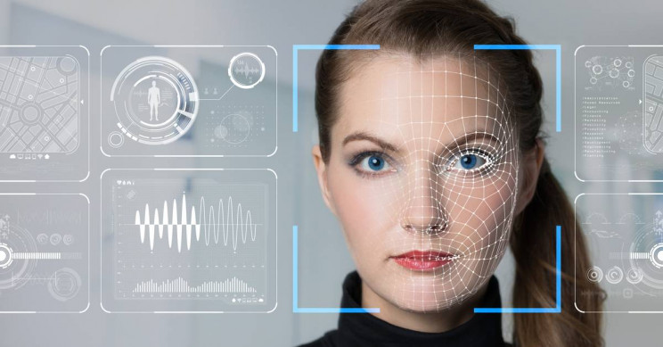

Falske videoer og lyd blir stadig mer realistiske, raskere og enklere å lage, noe som øker denne teknologiens potensial for skade hvis de blir satt i feil hender. Dype forfalskninger, eller realistiske videoer og lyd, fikk popularitet som et middel til å legge berømte skuespillerinner til pornoscener. Senere har det kommet eksempler på naturtro bilder av personer som ikke eksisterer, eller kjente personer som gjør eller sier ting som de aldri har gjort. Til tross for forbud på store nettsteder, er de enkle å lage og finne. De er oppkalt etter de dype lærende AL-algoritmene som gjør dem mulige (deep machine learning).
Hva er deepfakes?
Ordet “deepfake”: kombinerer begrepene "deep learning": og "fake", og er en form for kunstig intelligens. “Deep learning” er en delmengde av AI:, og refererer til ordninger av algoritmer som kan lære og ta intelligente beslutninger på egenhånd. Deep learning bygger på maskinlæring, avansert statistikk og store og dype nevrale nettverk. Disse kan læres opp til å utføre svært avanserte oppgaver (som å gjenkjenne eller skape bilder). Men faren med det er teknologien kan brukes til å få folk til å tro at noe er ekte når det ikke er det, og skape kaos. For eksempel, dersom en uskyldig person blir satt i en porno film som “deep fake”, vil det spres rykter, folk vil tro det er ekte og det kan gå hardt utover karrieren til denne personen. Tilsvarende kan “deep fakes” av for eksempel politikere som sier og gjør ting som ikke har skjedd kunne avgjøre politiske valg eller skape sosial uro. Akkurat nå foregår det et våpenkappløp mellom det å lage stadig mer naturtro “deep fakes”, og de som jobber for å avsløre hva som er falskt. Skulle de som lager “deep fakes” lede dette vil det kun gi en helt ny bølge av “fake news”.:
Hvordan lages de?
Et eksempel på en “deepfake” er ansiktsbytte. Dette fins allerede i bla. Snapchat og Apple Iphone. Det er relativt enkelt å lage en ansiktsbytte video med et slikt program, selv om det har tatt tusenvis av timer og masse datakraft for å lage algoritmen som blir brukt. For å lage algoritmen kjøres tusenvis av ansiktsbilder av ulike personer gjennom en AI-algoritme kalt en “encoder”.: “Encoderen” finner og lærer likheter mellom to og to ansikter, og reduserer dem til deres fellestrekk, og komprimerer bildene først så de ikke tar så mye plass. En annen AI-algoritme kalt en dekoder blir deretter lært å gjenopprette ansiktene fra de komprimerte bildene. Fordi ansiktene er forskjellige, trenes en dekoder for å gjenopprette ansiktet til den første personen, og en annen “decoder”.: for å gjenopprette ansiktet til den andre personen. For å utføre ansiktsbytte, mates kodede bilder i en "feil" dekoder. For eksempel mates et komprimert bilde av person A's ansikt inn i dekoderen som er trent på person B. Dekoderen rekonstruerer deretter ansiktet til person B med uttrykkene og orienteringen av ansiktet A. For en overbevisende video må dette gjøres på hvert bilde i videoen, og bildene må ha en sømløs overgang.
